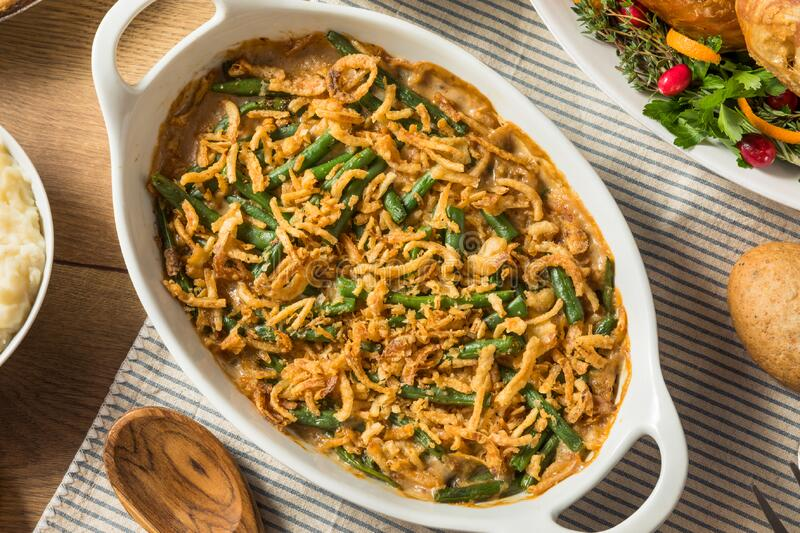

Bean Casserole

Green Bean Casserole
Green Bean Casserole is American baked Dish consisting primarily of green beans, cream of mushroom soup, and french fried onions.
It is a popular side dish for Thanksgiving dinners in the United States and has been described as iconic.
Description
How to make Green Bean Casserole.
Ingredients
- Green beans
- Canned soup
- Cheese
- French-fried onions
- Optional ingredients
Steps
- Mix the beans and soup in a microwave-safe bowl and microwave until warm.
- Stir in half the cheese. Microwave until melted and well-blended.
- Transfer to a prepared baking dish. Top with fried onions and remaining cheese.
- Bake in the preheated oven until the cheese is melted and the onions are brown.